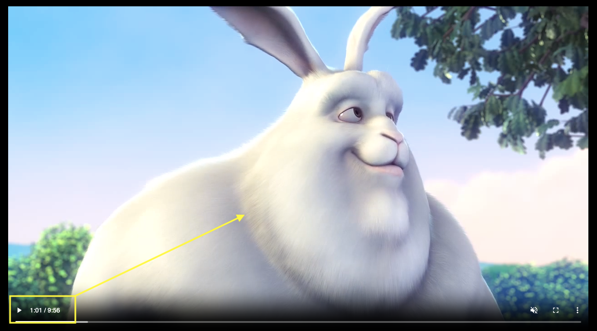

This guide outlines the process for creating a video search and summarization workflow in Snowflake Notebook on Container Runtime. Videos stored in the cloud storage are processed to generate embeddings using the Twelve Labs API, with parallelization achieved through a Snowpark Python User Defined Table Function (UDTF). These embeddings are stored in a Snowflake table using the VECTOR datatype, enabling efficient similarity searches with VECTOR_COSINE_SIMILARITY. Text queries are converted into embeddings using the same API to find the top N matching video clips. Audio from these clips is extracted using MoviePy and transcribed with Whisper. Finally, Cortex Complete is used to summarize the results, including video details, timestamps, and transcripts.
What is Container Runtime?
Snowflake Notebooks on Container Runtime enable advanced data science and machine learning workflows directly within Snowflake. Powered by Snowpark Container Services, it provides a flexible environment to build and operationalize various workloads, especially those requiring Python packages from multiple sources and powerful compute resources, including CPUs and GPUs. With this Snowflake-native experience, you can train models, perform hyperparameter tuning, and execute batch inference while seamlessly running SQL queries. Unlike virtual warehouses, Container Runtime for ML offers greater flexibility and tailored compute options for complex workloads. NOTE: This feature is currently in Public Preview.
Learn more about Container Runtime.
What is Twelve Labs?
Twelve Labs is a platform that provides AI-powered video understanding tools. It enables developers to extract meaningful insights from video content by creating embeddings that represent visual and audio features, allowing for advanced search, categorization, and analysis. With APIs for generating embeddings and querying them for similarity, Twelve Labs is ideal for tasks like content-based retrieval, scene detection, and semantic search in videos. It integrates seamlessly into workflows, making it easier to process and analyze large-scale video data efficiently.
Learn more about Twelve Labs.
What is Snowflake Cortex?
Snowflake Cortex is a suite of AI features that use large language models (LLMs) to understand unstructured data, answer freeform questions, and provide intelligent assistance.
Learn more about Snowflake Cortex.
What is Whisper?
OpenAI's Whisper is an open-source automatic speech recognition (ASR) model designed for high-quality transcription and translation of spoken language. Trained on diverse multilingual data, it handles various languages, accents, and challenging audio conditions like background noise. Whisper supports transcription, language detection, and translation to English, making it versatile for applications such as subtitles, accessibility tools, and voice interfaces. Available in multiple model sizes, it balances performance and resource needs, enabling seamless integration into real-world projects.
Learn more about Whisper.
Prerequisites
- Access to a Snowflake account with ACCOUNTADMIN role.
- Access to a Twelve Labs account and API key.
- Access to video(s) uploaded to a publicly accessible URL.
What You Will Learn
- Generate Video Embeddings: Use the Twelve Labs API to create embeddings for videos stored in the cloud storage.
- Parallel Processing: Leverage a Python UDTF to process the videos in parallel.
- Store Embeddings: Save the video embeddings in a Snowflake table using the VECTOR datatype.
- Similarity Search: Use VECTOR_COSINE_SIMILARITY to find the top N matching clips for a given text query. The query is converted into embeddings via the Twelve Labs API.
- Transcription: Use MoviePy to extract audio from the top N video clips, then transcribe them with Whisper.
- Summarize Results: Utilize Cortex Complete to summarize results, including video name/URL, clip start and end times (in seconds), and the transcript of each clip.
What You Will Build
AI videos processing and search app using Twelve Labs, Whisper, Streamlit, and Snowflake Cortex in Snowflake Notebook on Container Runtime running in Snowflake.
Step 1. In Snowsight, create a SQL Worksheet and open setup.sql to execute all statements in order from top to bottom.
Step 2. In Snowsight, switch your user role to DASH_CONTAINER_RUNTIME_ROLE.
Step 3. Click on Gen_AI_Video_Search.ipynb to download the Notebook from GitHub. (NOTE: Do NOT right-click to download.)
Step 4. In Snowsight:
- On the left hand navigation menu, click on Projects » Notebooks
- On the top right, click on Notebook down arrow and select Import .ipynb file from the dropdown menu
- Select Gen_AI_Video_Search.ipynb file you downloaded in the step above
- In the Create Notebook popup
- For Notebook location, select
DASH_DBandDASH_SCHEMA - For SQL warehouse, select
DASH_WH_S - For Python environment, select
Run on container - For Runtime, select
Snowflake ML Runtime CPU 1.0 - For Compute pool, select
CPU_X64_XS - Click on Create button
- For Notebook location, select
Step 5. Open Notebook
- Click in the three dots at the very top-right corner and select
Notebook settings»External access - Turn on ALLOW_ALL_ACCESS_INTEGRATION
- Click on Save button
- Click on Start button on top right
Here's the code walkthrough of the Gen_AI_Video_Search.ipynb notebook that you downloaded and imported into your Snowflake account.
Cell 1: Install Python packages and other libraries
Cell 2: Import installed libraries
Cell 3: This is where we provide a list of publicly accessible URLs of videos. NOTE: In this guide, three sample videos have been provided.
Cell 4: Create and register create_video_embeddings Snowpark Python User Defined Table Function (UDTF) for creating embeddings for the videos using Twelve Labs.
Things to note in the UDTF:
session.add_import('@"DASH_DB"."DASH_SCHEMA"."DASH_PKGS"/twelvelabs.zip')adds the twelvelabs Python package that will create the video embeddingspackages=['httpx','pydantic']adds the additional packages required and also readily available in the Snowflake Anaconda channelexternal_access_integrations=['twelvelabs_access_integration'],andsecrets={'cred': 'twelve_labs_api'}adds the external access integration and the twelvelabs API (secret) that will authorize the UDTF to securely access Twelve Labs account to create the video embeddingsoutput_schema=StructType([ StructField("embedding", VectorType(float,1024)), StructField("start_offset_sec", FloatType()), StructField("end_offset_sec", FloatType()), StructField("embedding_scope", StringType()) ])defines the schema with columns and their datatypes that will be the output of this UDTF. Notice the VectorType of theembeddingcolumn
Cell 5: Create a Snowpark DataFrame using the list of videos and for each video call create_video_embeddings UDTF to generate embeddings. Note that the parallel processing of each video is achieved by .over(partition_by="url"). Then, save those embeddings in a Snowflake table called video_embeddings.
Cell 6: Download open source whisper model and define the following Python functions: * download_video * extract_audio_from_video * transcribe_with_whisper * transcribe_video * transcribe_video_clip
Cell 7: Replace tlk_XXXXXXXXXXXXXXXXXX with your Twelve Labs API Key. Here we define Python function similarity_scores that uses Twelve Labs to create embeddings for a given text – entered_text passed in as a parameter. Then, similarity scores are generated using Snowflake function VECTOR_COSINE_SIMILARITY between text embeddings and video embeddings stored in video_embeddings table. This function returns top N records (based on max_results passed in as a parameter) with columns VIDEO_URL, START_OFFSET_SEC, END_OFFSET_SEC, and SIMILARITY_SCORE.
Cell 8: Streamlit application that takes Search Text, Max Results, and Summary LLM as user input. Then, it first calls similarity_scores function to get top N video clip records along with their similarity scores. For each clip, it then calls transcribe_video_clip function passing in its VIDEO_URL, START_OFFSET_SEC, END_OFFSET_SEC to generate the clip transcription. Finally, it calls snowflake.cortex.Complete to summarize the output.
Search Examples
For all search results, the app displays the URL of the video, the clip start and end times, similarity score generated by VECTOR_COSINE_SIMILARITY, clip transcript generated by open source whisper model, as well as the summary generated by Snowflake Cortex.
In all of the following examples, notice the highlighted clip start and end times as well as the timestamps in the respective videos.
Example 1
Search text: snowflake intelligence


Example 2
Search text: blender foundation


Example 3
Search text: bunny


Congratulations! You've successfully created a interactive AI videos processing and search app using Twelve Labs, Whisper, Streamlit, and Snowflake Cortex in Snowflake Notebook on Container Runtime running in Snowflake.
What You Learned
- Generate Video Embeddings: Use the Twelve Labs API to create embeddings for videos stored in the cloud storage.
- Parallel Processing: Leverage a Python UDTF to process the videos in parallel.
- Store Embeddings: Save the video embeddings in a Snowflake table using the VECTOR datatype.
- Similarity Search: Use VECTOR_COSINE_SIMILARITY to find the top N matching clips for a given text query. The query is converted into embeddings via the Twelve Labs API.
- Transcription: Use MoviePy to extract audio from the top N video clips, then transcribe them with Whisper.
- Summarize Results: Utilize Cortex Complete to summarize results, including video name/URL, clip start and end times (in seconds), and the transcript of each clip.